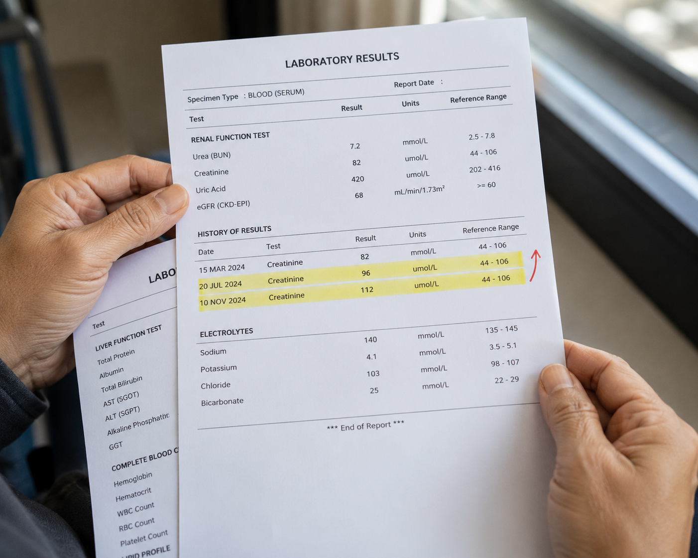
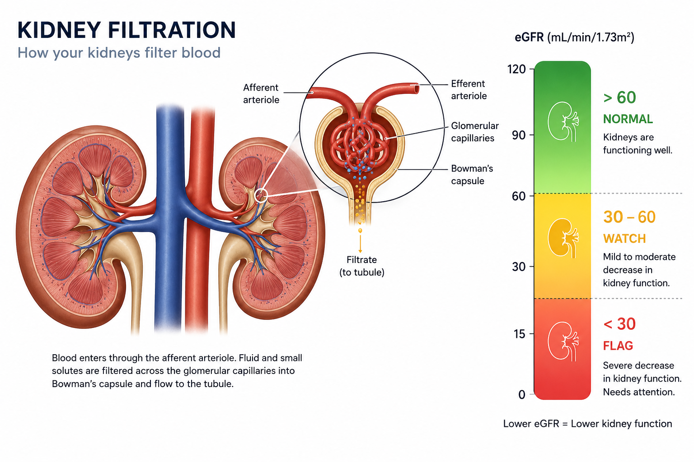
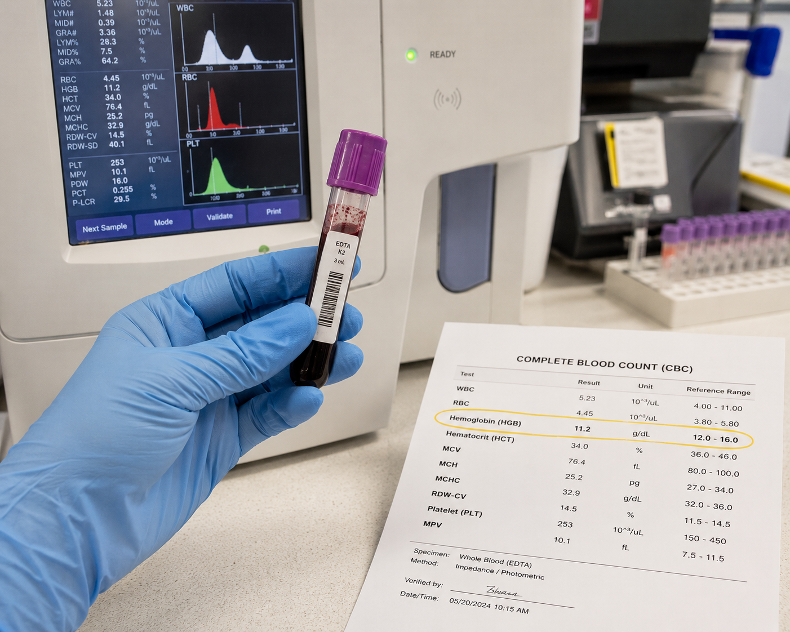
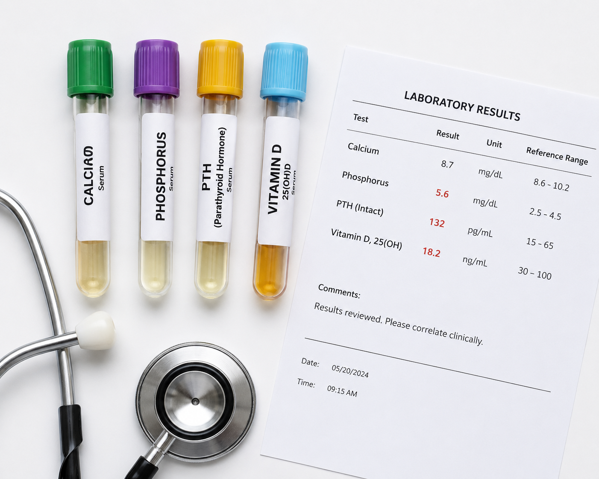
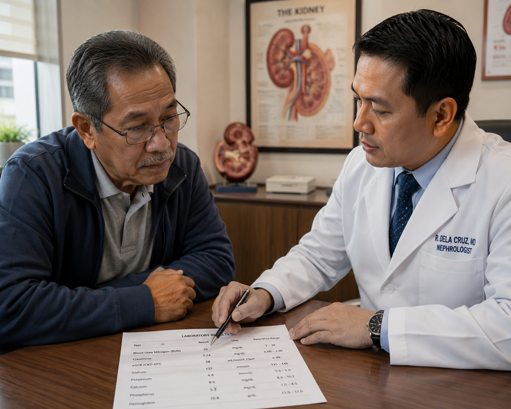

How to Read a Laboratory ReportPaano Basahin ang isang Ulat ng LaboratoryoUnsaon Pagbasa sa usa ka Ulat sa Laboratoryo Paano Basahin ing metung a Ulat ning Laboratoryo

The most important skill in reading CKD labs is identifying the trend — not just the single number. A creatinine of 2.0 mg/dL is reassuring if it has been stable for 2 years but alarming if it was 1.2 mg/dL three months ago. Always compare to your previous results.Ang pinaka-mahalagang kasanayan sa pagbabasa ng mga lab ng CKD ay ang pagtukoy ng trend — hindi lamang ang isang numero. Ang creatinine na 2.0 mg/dL ay nakapapatibay ng loob kung ito ay matatag sa loob ng 2 taon ngunit nakakabahala kung ito ay 1.2 mg/dL tatlong buwan na ang nakalipas. Palaging ihambing sa inyong mga nakaraang resulta.Ang pinaka-importante nga kahanas sa pagbasa sa mga lab sa CKD mao ang pag-ila sa trend — dili lamang ang usa ka numero. Ang creatinine nga 2.0 mg/dL makapalig-on kung kini matatag sulod sa 2 ka tuig apan makapabalaka kung kini 1.2 mg/dL tulo ka bulan ang milabay. Kanunay ikumpara sa imong mga nauna nga resulta. Ing pinaka-mahalagang kasanayan king pagbabasa ning deng lab ning CKD ya ing pagtukoy ning trend — ali lamang ing metung a numero. Ing creatinine a 2.0 mg/dL ya nakapapatibay ning loob nung ini ya matatag king loob ning 2 banua ngarud nakakabahala nung ini ya 1.2 mg/dL tatlong bulan a ing nakalipas. Papirming ihambing king inyu deng nakaraang resulta.
Bring ALL your recent lab results to every consultation — not just the abnormal ones. Trends over time matter as much as individual values in CKD monitoring.Dalhin ang LAHAT ng inyong mga kamakailang resulta ng laboratoryo sa bawat konsultasyon — hindi lamang ang mga abnormal. Ang mga pagbabago sa paglipas ng panahon ay kasinghalaga ng mga indibidwal na halaga sa pagsubaybay ng CKD.Dad-a ang TANAN sa inyong bag-ong mga resulta sa laboratoryo sa matag konsultasyon — dili lang ang mga abnormal. Ang mga pagbabago sa paglabay sa panahon importanti kaayo sa pagsubay sa CKD. Dalhin ing LAHAT ning inyu deng kamakailang resulta ning laboratoryo king bawat konsultasyon — ali lamang ing deng abnormal. Ing deng pagbabago king paglipas ning panahon ya kasinghalaga ning deng indibidwal a halaga king pagsubaybay ning CKD.
Laboratory results have three parts: the test name, your result, and the reference range. A result outside the reference range does not automatically mean something is seriously wrong — context, trends over time, and your clinical picture matter far more than any single number.Ang mga resulta ng laboratoryo ay may tatlong bahagi: ang pangalan ng pagsusuri, ang inyong resulta, at ang reference range. Ang isang resulta na nasa labas ng reference range ay hindi awtomatikong nangangahulugang may seryosong problema — ang konteksto, mga pagbabago sa paglipas ng panahon, at ang inyong klinikal na larawan ay higit na mahalaga kaysa sa anumang solong bilang.Ang mga resulta sa laboratoryo adunay tulo ka bahin: ang ngalan sa pagsusuri, ang inyong resulta, ug ang reference range. Ang usa ka resulta nga gawas sa reference range dili awtomatiko nga nagpasabut nga adunay seryosong problema — ang konteksto, mga pagbabago sa paglabay sa panahon, ug ang inyong klinikal nga kahimtang mas importanti kay sa bisan unsang solong numero. Ing deng resulta ning laboratoryo ya atin tatlong bahagi: ing pangalan ning pagsusuri, ing inyu resulta, at ing reference range. Ing metung a resulta a nasa labas ning reference range ya ali awtomatikong nangangahulugang atin seryosong problema — ing konteksto, deng pagbabago king paglipas ning panahon, at ing inyu klinikal a larawan ya higit a importante kaysa king anumang solong bilang.
Trend matters more than a single resultAng pagbabago ng resulta ay higit na mahalaga kaysa sa isang resulta lamangAng pagbabago sa resulta mas importanti kay sa usa ka resulta lamang Ing pagbabago ning resulta ya higit a importante kaysa king metung a resulta lamang
A creatinine of 1.8 mg/dL that has been stable for 3 years is very different from a creatinine of 1.8 that was 1.2 three months ago. Always bring your previous results to compare. Your doctor reads patterns, not isolated numbers.Ang creatinine na 1.8 mg/dL na matatag sa loob ng 3 taon ay ibang-iba sa creatinine na 1.8 na 1.2 pa lamang tatlong buwan ang nakalipas. Laging dalhin ang inyong mga nakaraang resulta para ikumpara. Binabasa ng inyong doktor ang mga pattern, hindi mga nakahiwalay na bilang.Ang creatinine nga 1.8 mg/dL nga matatag sulod sa 3 ka tuig lahi kaayo sa creatinine nga 1.8 nga 1.2 pa lamang tulo ka bulan ang milabay. Kanunay dad-a ang inyong mga nakaaging resulta aron ikumpara. Gibabasa sa inyong doktor ang mga pattern, dili mga nahimulag nga numero. Ing creatinine a 1.8 mg/dL a matatag king loob ning 3 banua ya ibang-iba king creatinine a 1.8 a 1.2 pa lamang tatlong bulan ing nakalipas. Pirming dalhin ing inyu deng nakaraang resulta para ikumpara. Binabasa ning inyu doktor ing deng pattern, ali deng nakahiwalay a bilang.
Reference ranges vary by laboratoryNagkakaiba ang mga reference range depende sa laboratoryoNagkalainlain ang mga reference range depende sa laboratoryo Nagkakaiba ing deng reference range depende king laboratoryo
Different laboratories use different machines and reference populations. A result flagged "H" (high) at one lab may be within range at another. Always compare results from the same laboratory when tracking trends.Gumagamit ang iba't ibang laboratoryo ng iba't ibang makina at reference na populasyon. Ang isang resulta na minarkahang "H" (mataas) sa isang laboratoryo ay maaaring nasa loob ng hanay sa iba. Laging ikumpara ang mga resulta mula sa parehong laboratoryo kapag sinusubaybayan ang mga pagbabago.Nagamit ang lain-laing mga laboratoryo ug lain-laing mga makina ug reference nga populasyon. Ang usa ka resulta nga gimarkahan "H" (taas) sa usa ka laboratoryo mahimong anaa sa sulod sa hanay sa lain. Kanunay ikumpara ang mga resulta gikan sa mao rang laboratoryo sa pagsubay sa mga pagbabago. Gumagamit ing iba't ibang laboratoryo ning iba't ibang makina at reference a populasyon. Ing metung a resulta a minarkahang "H" (matas) king metung a laboratoryo ya maaaring nasa loob ning hanay king iba. Pirming ikumpara ing deng resulta mula king parehong laboratoryo nung sinusubaybayan ing deng pagbabago.
The badge system used in this guideAng sistema ng badge na ginagamit sa gabay na itoAng sistema sa badge nga gigamit niining giya Ing sistema ning badge a ginagamit king gabay a ini
Normal — within target range for most patients Watch — borderline; monitor closely Flag — requires medical attentionNormal — nasa loob ng target range para sa karamihan ng pasyente Bantayan — nasa hangganan; subaybayan nang mabuti Markahan — nangangailangan ng medikal na atensyonNormal Normal — nasa loob ning target range para king kadaklan ning pasyente Bantayan — nasa hangganan; subaybayan nang mabuti Markahan — nangangailangan ning medikal a atensyon — anaa sa sulod sa target range alang sa kadaghanan sa mga pasyente Bantayan — sa hangtod; bantayan pag-ayo Markahan — nagkinahanglan ug medikal nga atensyon
Kidney Tests — What They MeasureMga Pagsusuri sa Bato — Ano ang Sinusukat NitoMga Pagsusuri sa Kidney — Unsa ang Gisukat Niini Deng Pagsusuri king Batu — Ano ing Sinusukat Nini

eGFR (estimated Glomerular Filtration Rate) is the single most important number in a CKD patient's lab results. It estimates how much kidney function remains. Creatinine alone can be misleading — a muscular patient has higher creatinine at the same kidney function as a smaller patient. eGFR corrects for this.Ang eGFR (estimated Glomerular Filtration Rate) ay ang pinaka-mahalagang numero sa mga resulta ng lab ng isang pasyenteng may CKD. Tinatantya nito kung gaano karaming function ng bato ang natitira. Ang creatinine lamang ay maaaring mapanlinlang — ang isang maskuladong pasyente ay may mas mataas na creatinine sa parehong function ng bato tulad ng isang mas maliit na pasyente. Inaayos ito ng eGFR.Ang eGFR (estimated Glomerular Filtration Rate) mao ang pinaka-importante nga numero sa mga resulta sa lab sa usa ka pasyente nga adunay CKD. Gibanabana niini kung pila ang nahibilin nga function sa kidney. Ang creatinine lamang mahimong makalimbong — ang usa ka maskuladong pasyente adunay mas taas nga creatinine sa mao mao nga function sa kidney sama sa usa ka mas gagmay nga pasyente. Kini gitama sa eGFR. Ing eGFR (estimated Glomerular Filtration Rate) ya ing pinaka-mahalagang numero king deng resulta ning lab ning metung a pasyenteng atin CKD. Tinatantya nini nung gaano karaming function ning batu ing natitira. Ing creatinine lamang ya maaaring mapanlinlang — ing metung a maskuladong pasyente ya atin mas matas a creatinine king parehong function ning batu tulad ning metung a mas maliit a pasyente. Inaayos ini ning eGFR.
Creatinine & eGFRCreatinine at eGFRCreatinine ug eGFR Creatinine at eGFR
The primary measure of kidney filtering capacityAng pangunahing sukatan ng kakayahan ng bato sa pagsalaAng nag-unang sukatan sa kakayahan sa pagsala sa kidney Ing pangunahing sukatan ning kakayahan ning batu king pagsala
| TestPagsusuriPagsusuri Pagsusuri | What it isAno itoUnsa kini Ano ini | Normal rangeNormal na hanayNormal nga hanay Normal a hanay | What to watchAno ang bantayanUnsa ang bantayan Ano ing bantayan |
|---|---|---|---|
| Serum Creatinine | Waste product from muscle metabolism — rises when kidneys filter less efficientlyBasura mula sa metabolismo ng kalamnan — tumataas kapag mas hindi episyente ang pagsala ng batoBasura gikan sa metabolismo sa kalamnan — motaas kung mas dili episyente ang pagsala sa kidney Basura mula king metabolismo ning kalamnan — tumataas nung mas ali episyente ing pagsala ning batu | 0.6–1.1 mg/dL (F) / 0.7–1.3 (M) | A rising creatinine over time is more important than a single high valueAng tumataas na creatinine sa paglipas ng panahon ay mas mahalaga kaysa sa isang mataas na halagaAng motaas nga creatinine sa paglabay sa panahon mas importanti kay sa usa ka taas nga kantidad Ing tumataas a creatinine king paglipas ning panahon ya mas importante kaysa king metung a matas a halaga |
| eGFR (CKD-EPI 2021) | Estimated filtration rate calculated from creatinine, age, and sex. Think of it as % of kidney function remainingTinatayang rate ng pagsala na kinukuwenta mula sa creatinine, edad, at kasarian. Isipin ito bilang % ng natitirang paggana ng batoGibanabana nga rate sa pagsala nga gikalkula gikan sa creatinine, edad, ug kasarian. Hunahunaa kini ingon % sa nahabilin nga pagtrabaho sa kidney Tinatayang rate ning pagsala a kinukuwenta mula king creatinine, edad, at kasarian. Isipin ini bilang % ning natitirang paggana ning batu | > 90 mL/min/1.73m² | 60–89 = mild decline · <60 = CKD confirmed60–89 = banayad na pagbaba · <60 = nakumpirmang CKD60–89 60–89 = banayad a pagbaba · <60 = nakumpirmang CKD = hinay nga pagkunhod · <60 = nakumpirma ang CKD |
| BUN (Blood Urea Nitrogen) | Another waste product filtered by kidneys; also affected by protein intake, hydration, and liver functionIsa pang basura na sinasala ng bato; apektado rin ng pagkain ng protina, hydrasyon, at paggana ng atayLaing basura nga gisala sa kidney; apektado usab sa pagkaon sa protina, hydrasyon, ug pagtrabaho sa atay Metung pang basura a sinasala ning batu; apektado rin ning pamangan ning protina, hydrasyon, at paggana ning atay | 7–20 mg/dL | BUN:Creatinine ratio >20 suggests dehydration or upper GI bleedingAng BUN:Creatinine ratio na >20 ay nagmumungkahi ng dehydration o pagdurugo sa itaas na GIAng BUN:Creatinine ratio nga >20 nagsugyot sa dehydration o pagdugo sa ibabaw nga GI Ing BUN:Creatinine ratio a >20 ya nagmumungkahi ning dehydration o pagdurugo king itaas a GI |
| BUN:Creatinine Ratio | Helps distinguish kidney causes of elevated creatinine from dehydrationTumutulong sa pagkilala ng mga sanhi ng mataas na creatinine — bato o dehydrationNagtabang sa pagkilala sa mga hinungdan sa taas nga creatinine — kidney o dehydration Tumutulong king pagkilala ning deng sanhi ning matas a creatinine — batu o dehydration | 10:1 to 20:1 | >20:1 = likely dehydration or reduced kidney blood flow>20:1 = malamang dehydration o nabawasan ang daloy ng dugo sa bato>20:1 >20:1 = malamang dehydration o nabawasan ing daloy ning daya king batu = posible nga dehydration o nabawasan ang dugo nga moagi sa kidney |
Urine Albumin & ProteinAlbumin at Protina sa IhiAlbumin ug Protina sa Ihi Albumin at Protina king Ihi
The earliest and most sensitive marker of kidney damageAng pinakamaagang at pinaka-sensitibong tanda ng pinsala sa batoAng labing sayo ug labing sensitibo nga timailhan sa kadaot sa kidney Ing pinakamaagang at pinaka-sensitibong tanda ning pinsala king batu
| TestPagsusuriPagsusuri Pagsusuri | What it isAno itoUnsa kini Ano ini | Normal rangeNormal na hanayNormal nga hanay Normal a hanay | What to watchAno ang bantayanUnsa ang bantayan Ano ing bantayan |
|---|---|---|---|
| UACR (Urine Albumin-to-Creatinine Ratio) | Measures albumin leaking into urine — the filtration membrane's "leak test." Abnormal years before eGFR declines.Sinusukat ang albumin na tumatawid sa ihi — ang "leak test" ng filtration membrane. Abnormal nang maraming taon bago bumaba ang eGFR.Gisukat ang albumin nga motawid sa ihi — ang "leak test" sa filtration membrane. Abnormal na daghang tuig bago mubaba ang eGFR. Sinusukat ing albumin a tumatawid king ihi — ing "leak test" ning filtration membrane. Abnormal nang dacal a banua bago bumaba ing eGFR. | <30 mg/g | 30–300 = microalbuminuria · >300 = macroalbuminuria — active kidney damage30–300 = microalbuminuria · >300 = macroalbuminuria — aktibong pinsala sa bato30–300 30–300 = microalbuminuria · >300 = macroalbuminuria — aktibong pinsala king batu = microalbuminuria · >300 = macroalbuminuria — aktibong kadaot sa kidney |
| Spot Urine Protein-to-Creatinine Ratio (UPCR) | Estimates 24-hour protein excretion from a single urine sampleTinatantya ang pagpapalabas ng protina sa loob ng 24 oras mula sa isang sample ng ihiGibanabana ang pagpagawas sa protina sulod sa 24 ka oras gikan sa usa ka sample sa ihi Tinatantya ing pagpapalabas ning protina king loob ning 24 oras mula king metung a sample ning ihi | <0.2 g/g | >0.5 significant; >3.5 = nephrotic-range proteinuria>0.5 makabuluhan; >3.5 = nephrotic-range proteinuria>0.5 >0.5 makabuluhan; >3.5 = nephrotic-range proteinuria makasaysayanon; >3.5 = nephrotic-range proteinuria |
| 24-Hour Urine Protein | Gold standard for quantifying protein loss; requires collecting all urine for 24 hoursGold standard para sa pagsukat ng pagkawala ng protina; nangangailangan ng pagkolekta ng lahat ng ihi sa loob ng 24 na orasGold standard sa pagsukat sa pagkawala sa protina; nagkinahanglan sa pagkolekta sa tanan nga ihi sulod sa 24 ka oras Gold standard para king pagsukat ning pagkaala ning protina; nangangailangan ning pagkolekta ning amin ning ihi king loob ning 24 a oras | <150 mg/day | >300 mg/day = confirmed significant proteinuria requiring investigation>300 mg/day = nakumpirmang makabuluhang proteinuria na nangangailangan ng imbestigasyon>300 mg/day >300 mg/day = nakumpirmang makabuluhang proteinuria a nangangailangan ning imbestigasyon = nakumpirma nga makasaysayanong proteinuria nga nagkinahanglan ug imbestigasyon |
Blood Count — What Each Cell MeasuresBilang ng Dugo — Ano ang Sinusukat ng Bawat SelulaBilang sa Dugo — Unsa ang Gisukat sa Matag Selula Bilang ning Daya — Ano ing Sinusukat ning Bawat Selula

Anemia of CKD is caused by reduced erythropoietin production — the kidney hormone that stimulates red blood cell formation. Target hemoglobin is 100–115 g/L in dialysis patients. Iron deficiency frequently coexists — both ferritin and transferrin saturation must be checked before starting ESA therapy.Ang anemia ng CKD ay sanhi ng nabawasang produksyon ng erythropoietin — ang hormona ng bato na nagpapasigla ng pagbuo ng pulang selula ng dugo. Ang target na hemoglobin ay 100–115 g/L sa mga pasyenteng naka-dialysis. Ang kakulangan sa bakal ay madalas na kasabay — ang parehong ferritin at transferrin saturation ay dapat suriin bago simulan ang ESA therapy.Ang anemia sa CKD gipahinabo sa nabawasang produksyon sa erythropoietin — ang hormona sa kidney nga nagpukaw sa pagporma sa pula nga selula sa dugo. Ang target nga hemoglobin 100–115 g/L sa mga pasyente nga naka-dialysis. Ang kakulangan sa iron kasagaran kauban — ang ferritin ug transferrin saturation kinahanglan susihon sa wala pa magsugod sa ESA therapy. Ing anemia ning CKD ya sanhi ning nabawasang produksyon ning erythropoietin — ing hormona ning batu a nagpapasigla ning pagbuo ning pulang selula ning daya. Ing target a hemoglobin ya 100–115 g/L king deng pasyenteng naka-dialysis. Ing kakulangan king bakal ya madalas a kasabay — ing parehong ferritin at transferrin saturation ya dapat suriin bago simulan ing ESA therapy.
Red Blood Cells & Anemia TestsMga Pulang Selula ng Dugo at Pagsusuri para sa AnemiaMga Pulang Selula sa Dugo ug Pagsusuri alang sa Anemia Deng Pulang Selula ning Daya at Pagsusuri para king Anemia
Oxygen-carrying capacity of the bloodKakayahan ng dugo na magdala ng oxygenKakayahan sa dugo sa pagdala sa oxygen Kakayahan ning daya a magdala ning oxygen
| TestPagsusuriPagsusuri Pagsusuri | What it isAno itoUnsa kini Ano ini | Normal rangeNormal na hanayNormal nga hanay Normal a hanay | What to watchAno ang bantayanUnsa ang bantayan Ano ing bantayan |
|---|---|---|---|
| Hemoglobin (Hgb) | The protein inside red blood cells that carries oxygen. Low hemoglobin = anemia = fatigue, shortness of breathAng protina sa loob ng mga pulang selula ng dugo na nagdadala ng oxygen. Mababang hemoglobin = anemia = pagod, hingalAng protina sulod sa mga pulang selula sa dugo nga nagdala sa oxygen. Ubos nga hemoglobin = anemia = kapoy, hapo Ing protina king loob ning deng pulang selula ning daya a nagdadala ning oxygen. Mababang hemoglobin = anemia = pagod, hingal | 120–160 g/L (F) / 130–170 (M) | CKD target: 100–115 g/L. <90 = symptomatic anemia requiring treatmentTarget sa CKD: 100–115 g/L. <90 = sintomatikong anemia na nangangailangan ng paggamotTarget sa CKD: 100–115 g/L. <90 Target king CKD: 100–115 g/L. <90 = sintomatikong anemia a nangangailangan ning paggamut = sintomatikong anemia nga nagkinahanglan ug pagtambal |
| Hematocrit (Hct) | Percentage of blood volume made up of red blood cells — mirrors hemoglobinPorsyento ng dami ng dugo na binubuo ng mga pulang selula ng dugo — sumasalamin sa hemoglobinPorsyento sa gidaghanon sa dugo nga binuhat sa mga pulang selula sa dugo — nagpakita sa hemoglobin Porsyento ning dami ning daya a binubuo ning deng pulang selula ning daya — sumasalamin king hemoglobin | 0.36–0.46 (F) / 0.40–0.50 (M) | Runs roughly 3× the hemoglobin value in g/dLHumigit-kumulang 3× ang halaga ng hemoglobin sa g/dLMga 3× sa kantidad sa hemoglobin sa g/dL Humigit-kumulang 3× ing halaga ning hemoglobin king g/dL |
| MCV (Mean Corpuscular Volume) | Size of red blood cells — helps identify the type of anemiaSukat ng mga pulang selula ng dugo — tumutulong sa pagtukoy ng uri ng anemiaSukat sa mga pulang selula sa dugo — nagtabang sa pag-ila sa klase sa anemia Sukat ning deng pulang selula ning daya — tumutulong king pagtukoy ning uri ning anemia | 80–100 fL | <80 = iron deficiency or thalassemia · >100 = B12/folate deficiency<80 = kakulangan sa bakal o thalassemia · >100 = kakulangan sa B12/folate<80 <80 = kakulangan king bakal o thalassemia · >100 = kakulangan king B12/folate = kakulang sa iron o thalassemia · >100 = kakulang sa B12/folate |
| Reticulocyte Count | Immature red blood cells — measures how fast the bone marrow is producing new RBCsMga hindi pa hinog na pulang selula ng dugo — sinusukat kung gaano kabilis gumagawa ng bagong RBC ang bone marrowMga dili pa hinog nga pulang selula sa dugo — gisukat kung unsa kadalas ang paghimo sa bone marrow sa bag-ong RBC Deng ali pa hinog a pulang selula ning daya — sinusukat nung gaano kabilis gumagawa ning bagong RBC ing bone marrow | 0.5–2.5% | Low reticulocytes + anemia = bone marrow not responding. High = active blood loss or recoveryMababang reticulocyte + anemia = hindi tumutugon ang bone marrow. Mataas = aktibong pagkawala ng dugo o pagbabawiUbos nga reticulocyte + anemia = wala motubag ang bone marrow. Taas = aktibong pagkawala sa dugo o pagkaayo Mababang reticulocyte + anemia = ali tumutugon ing bone marrow. Matas = aktibong pagkaala ning daya o pagbabawi |
| Serum Ferritin | Iron storage protein — best overall marker of iron storesProtina na nag-iimbak ng bakal — pinakamahusay na pangkalahatang tanda ng mga imbak ng bakalProtina nga nagtipig sa iron — labing maayo nga pangkabiliran nga timailhan sa mga tipigan sa iron Protina a nag-iimbak ning bakal — pinakamahusay a pangkalahatang tanda ning deng imbak ning bakal | 12–150 ng/mL (F) / 12–300 (M) | CKD/dialysis target: >200 ng/mL. >500 with inflammation may be falsely elevatedTarget sa CKD/dialysis: >200 ng/mL. >500 na may pamamaga ay maaaring maling mataasTarget sa CKD/dialysis: >200 ng/mL. >500 Target king CKD/dialysis: >200 ning/mL. >500 a atin pamamaga ya maaaring maling matas nga adunay implamasyon mahimong sayop nga taas |
| TSAT (Transferrin Saturation) | Percentage of transferrin (iron transport protein) bound to iron — functional iron availabilityPorsyento ng transferrin (protina na nagdadala ng bakal) na nakatali sa bakal — functional na availability ng bakalPorsyento sa transferrin (protina nga nagdala sa iron) nga gihigot sa iron — functional nga availability sa iron Porsyento ning transferrin (protina a nagdadala ning bakal) a nakatali king bakal — functional a availability ning bakal | 20–50% | CKD target: >30%. <20% = iron-deficient erythropoiesis even if ferritin is normalTarget sa CKD: >30%. <20% = iron-deficient erythropoiesis kahit normal ang ferritinTarget sa CKD: >30%. <20% Target king CKD: >30%. <20% = iron-deficient erythropoiesis kahit normal ing ferritin = iron-deficient erythropoiesis bisan normal ang ferritin |
White Blood Cells & PlateletsMga Puting Selula ng Dugo at PlateletMga Puting Selula sa Dugo ug Platelet Deng Puting Selula ning Daya at Platelet
Immune defense and clottingDepensa ng immune system at pamumuo ng dugoDepensa sa immune system ug pag-umol sa dugo Depensa ning immune system at pamumuo ning daya
| TestPagsusuriPagsusuri Pagsusuri | What it isAno itoUnsa kini Ano ini | Normal rangeNormal na hanayNormal nga hanay Normal a hanay | What to watchAno ang bantayanUnsa ang bantayan Ano ing bantayan |
|---|---|---|---|
| WBC (White Blood Cell Count) | Total immune cell count — elevated in infection or inflammation, low in some medications or bone marrow conditionsKabuuang bilang ng immune cell — mataas sa impeksyon o pamamaga, mababa sa ilang gamot o kondisyon ng bone marrowKinatibuk-ang bilang sa immune cell — taas sa impeksyon o implamasyon, ubos sa pipila ka tambal o kondisyon sa bone marrow Kabuuang bilang ning immune cell — matas king impeksyon o pamamaga, mababa king ilang gamut o kondisyon ning bone marrow | 4.5–11.0 × 10⁹/L | >15 suggests significant infection · <3.0 = leukopenia — may require medication review>15 nagmumungkahi ng malubhang impeksyon · <3.0 = leukopenia — maaaring kailangan ng pagsusuri ng gamot>15 >15 nagmumungkahi ning malubhang impeksyon · <3.0 = leukopenia — maaaring kailangan ning pagsusuri ning gamut nagsugyot sa seryosong impeksyon · <3.0 = leukopenia — mahimong kinahanglan ug pagsusuri sa tambal |
| Neutrophils (Segs) | First-responder immune cells — elevated in bacterial infectionMga immune cell na unang tumutugon — mataas sa impeksyong bakteryalMga immune cell nga unang motubag — taas sa impeksyong bakteryal Deng immune cell a unang tumutugon — matas king impeksyong bakteryal | 50–70% | >80% with high WBC = likely active bacterial infection>80% na may mataas na WBC = malamang aktibong impeksyong bakteryal>80% >80% a atin matas a WBC = malamang aktibong impeksyong bakteryal nga adunay taas nga WBC = posible nga aktibong impeksyong bakteryal |
| Lymphocytes | Virus-fighting cells — low in early viral infections, malnutrition, or immunosuppressionMga selulang lumalaban sa virus — mababa sa maagang impeksyong viral, malnutrisyon, o immunosuppressionMga selula nga nakig-away sa virus — ubos sa sayo nga impeksyong viral, malnutrisyon, o immunosuppression Deng selulang lumalaban king virus — mababa king maagang impeksyong viral, malnutrisyon, o immunosuppression | 20–40% | <15% in CKD may indicate uremia-related immune suppression<15% sa CKD ay maaaring nagpapahiwatig ng immune suppression na may kaugnayan sa uremia<15% <15% king CKD ya maaaring nagpapahiwatig ning immune suppression a atin kaugnayan king uremia sa CKD mahimong nagpakita sa immune suppression nga may kalabtan sa uremia |
| Platelets | Clotting cells — too low causes bleeding risk, too high can cause clottingMga selulang nagpapaumok ng dugo — masyadong mababa ay nagdudulot ng panganib sa pagdurugo, masyadong mataas ay maaaring magdulot ng pamumuoMga selula nga nakapag-umol sa dugo — ubos kaayo nagdala sa risgo sa pagdugo, taas kaayo mahimong magdala sa pag-umol Deng selulang nagpapaumok ning daya — masyadong mababa ya nagdudulot ning panganib king pagdurugo, masyadong matas ya maaaring magdulot ning pamumuo | 150–400 × 10⁹/L | <100 = increased bleeding risk — review anticoagulants · >600 = thrombocytosis, evaluate<100 = tumaas na panganib sa pagdurugo — suriin ang anticoagulants · >600 = thrombocytosis, suriin<100 <100 = tumaas a panganib king pagdurugo — suriin ing anticoagulants · >600 = thrombocytosis, suriin = mitaas nga risgo sa pagdugo — susihon ang anticoagulants · >600 = thrombocytosis, susihon |
Metabolic Panel — Electrolytes and Organ FunctionMetabolic Panel — Mga Electrolyte at Paggana ng OrganMetabolic Panel — Mga Electrolyte ug Pagtrabaho sa Organ Metabolic Panel — Deng Electrolyte at Paggana ning Organ
ElectrolytesMga ElectrolyteMga Electrolyte Deng Electrolyte
Minerals that control fluid balance, nerve and muscle functionMga mineral na kumokontrol sa balanse ng likido, paggana ng nerbyo at kalamnanMga mineral nga nagkontrol sa balanse sa likido, pagtrabaho sa nerbyo ug kalamnan Deng mineral a kumokontrol king balanse ning likido, paggana ning nerbyo at kalamnan
| TestPagsusuriPagsusuri Pagsusuri | What it isAno itoUnsa kini Ano ini | Normal rangeNormal na hanayNormal nga hanay Normal a hanay | What to watchAno ang bantayanUnsa ang bantayan Ano ing bantayan |
|---|---|---|---|
| Sodium (Na) | Controls fluid balance and nerve function. Low sodium causes confusion and seizures; high causes dehydrationKumokontrol sa balanse ng likido at paggana ng nerbyo. Mababang sodium ay nagdudulot ng pagkalito at seizure; mataas ay nagdudulot ng dehydrationNagkontrol sa balanse sa likido ug pagtrabaho sa nerbyo. Ubos nga sodium nagdala sa kalibog ug seizure; taas nagdala sa dehydration Kumokontrol king balanse ning likido at paggana ning nerbyo. Mababang sodium ya nagdudulot ning pagkalito at seizure; matas ya nagdudulot ning dehydration | 136–145 mEq/L | <130 or >150 = symptomatic — requires urgent correction<130 o >150 = may sintomas — nangangailangan ng agarang pagwawasto<130 o >150 <130 o >150 = atin sintomas — nangangailangan ning agarang pagwawasto = adunay sintomas — nagkinahanglan ug dinalian nga pagpabag-o |
| Potassium (K) | Critical for heart rhythm. Elevated in CKD because kidneys cannot excrete it. Life-threatening if too high.Kritikal para sa ritmo ng puso. Mataas sa CKD dahil hindi ito maipagawas ng bato. Mapanganib sa buhay kung masyadong mataas.Kritikal alang sa ritmo sa puso. Taas sa CKD tungod dili kini mapagawas sa kidney. Makamamatay kung taas kaayo. Kritikal para king ritmo ning pusu. Matas king CKD dahil ali ini maipagawas ning batu. Mapanganib king biye nung masyadong matas. | 3.5–5.0 mEq/L | CKD target: 3.5–5.5 pre-HD. >6.0 = cardiac emergency. <3.0 = hypokalemia — also dangerousTarget sa CKD: 3.5–5.5 bago ang HD. >6.0 = emergency sa puso. <3.0 = hypokalemia — mapanganib dinTarget sa CKD: 3.5–5.5 bago ang HD. >6.0 Target king CKD: 3.5–5.5 bago ing HD. >6.0 = emergency king pusu. <3.0 = hypokalemia — mapanganib din = emergency sa puso. <3.0 = hypokalemia — peligroso usab |
| Bicarbonate (HCO₃) | Acid-base buffer — low in metabolic acidosis, which accelerates muscle and bone breakdown in CKDBuffer ng acid-base — mababa sa metabolic acidosis, na nagpapabilis ng pagkasira ng kalamnan at buto sa CKDBuffer sa acid-base — ubos sa metabolic acidosis, nga nagpabilis sa pagkaguba sa kalamnan ug bukog sa CKD Buffer ning acid-base — mababa king metabolic acidosis, a nagpapabilis ning pagkasira ning kalamnan at buto king CKD | 22–29 mEq/L | CKD target: 22–26. <18 = significant acidosis — often requires sodium bicarbonate treatmentTarget sa CKD: 22–26. <18 = makabuluhang acidosis — kadalasang nangangailangan ng paggamot na sodium bicarbonateTarget sa CKD: 22–26. <18 Target king CKD: 22–26. <18 = makabuluhang acidosis — kadalasang nangangailangan ning paggamut a sodium bicarbonate = makasaysayanong acidosis — kasagaran nagkinahanglan ug pagtambal nga sodium bicarbonate |
| Chloride (Cl) | Works with sodium to maintain fluid balance — usually interpreted alongside sodium and bicarbonateNakikipagtulungan sa sodium upang mapanatili ang balanse ng likido — karaniwang binibigyang-kahulugan kasabay ng sodium at bicarbonateNagtabang sa sodium sa pagpadayon sa balanse sa likido — kasagarang gihubad kauban sa sodium ug bicarbonate Nakikipagtulungan king sodium upang mapanatili ing balanse ning likido — karaniwang binibigyang-kahulugan kasabay ning sodium at bicarbonate | 98–107 mEq/L | Rarely interpreted alone; high chloride + low bicarbonate = metabolic acidosis patternBihirang binibigyang-kahulugan nang mag-isa; mataas na chloride + mababang bicarbonate = pattern ng metabolic acidosisDaan ra gihubad nga nag-inusara; taas nga chloride + ubos nga bicarbonate = pattern sa metabolic acidosis Bihirang binibigyang-kahulugan nang mag-metung; matas a chloride + mababang bicarbonate = pattern ning metabolic acidosis |
| Magnesium (Mg) | Important for muscle, nerve, and heart function. Low in patients on SGLT2 inhibitors or with poor intakeMahalaga para sa paggana ng kalamnan, nerbyo, at puso. Mababa sa mga pasyenteng gumagamit ng SGLT2 inhibitors o may mahinang pagkainImportante alang sa pagtrabaho sa kalamnan, nerbyo, ug puso. Ubos sa mga pasyente nga mogamit ug SGLT2 inhibitors o adunay diyot nga pagkaon Importante para king paggana ning kalamnan, nerbyo, at pusu. Mababa king deng pasyenteng gumagamit ning SGLT2 inhibitors o atin mahinang pamangan | 0.75–1.0 mmol/L (1.8–2.4 mg/dL) | <0.7 = supplementation needed. Low Mg worsens potassium and calcium control<0.7 = kailangan ng supplementation. Ang mababang Mg ay nagpapalala ng kontrol ng potassium at calcium<0.7 <0.7 = kailangan ning supplementation. Ing mababang Mg ya nagpapalala ning kontrol ning potassium at calcium = kinahanglan ang supplementation. Ang ubos nga Mg nagpagrabe sa kontrol sa potassium ug calcium |
Liver & Protein TestsMga Pagsusuri sa Atay at ProtinaMga Pagsusuri sa Atay ug Protina Deng Pagsusuri king Atay at Protina
Organ function and nutritional statusPaggana ng organ at katayuan ng nutrisyonPagtrabaho sa organ ug kahimtang sa nutrisyon Paggana ning organ at katayuan ning nutrisyon
| TestPagsusuriPagsusuri Pagsusuri | What it isAno itoUnsa kini Ano ini | Normal rangeNormal na hanayNormal nga hanay Normal a hanay | What to watchAno ang bantayanUnsa ang bantayan Ano ing bantayan |
|---|---|---|---|
| Albumin | Main blood protein — marker of nutritional status and liver function. Low albumin = protein malnutrition or liver diseasePangunahing protina ng dugo — tanda ng katayuan ng nutrisyon at paggana ng atay. Mababang albumin = malnutrisyon sa protina o sakit sa atayNag-unang protina sa dugo — timailhan sa kahimtang sa nutrisyon ug pagtrabaho sa atay. Ubos nga albumin = malnutrisyon sa protina o sakit sa atay Pangunahing protina ning daya — tanda ning katayuan ning nutrisyon at paggana ning atay. Mababang albumin = malnutrisyon king protina o sakit king atay | 3.5–5.0 g/dL | CKD/dialysis target: ≥4.0 g/dL. <3.5 = malnutrition — requires nutritional interventionTarget sa CKD/dialysis: ≥4.0 g/dL. <3.5 = malnutrisyon — nangangailangan ng interbensyon sa nutrisyonTarget sa CKD/dialysis: ≥4.0 g/dL. <3.5 Target king CKD/dialysis: ≥4.0 g/dL. <3.5 = malnutrisyon — nangangailangan ning interbensyon king nutrisyon = malnutrisyon — nagkinahanglan ug interbensyon sa nutrisyon |
| ALT / SGPT | Liver enzyme — elevated when liver cells are damaged (hepatitis, fatty liver, medications)Enzyme ng atay — mataas kapag nasira ang mga selula ng atay (hepatitis, fatty liver, gamot)Enzyme sa atay — taas kung nadaot ang mga selula sa atay (hepatitis, fatty liver, tambal) Enzyme ning atay — matas nung nasira ing deng selula ning atay (hepatitis, fatty liver, gamut) | <40 U/L (F) / <56 U/L (M) | 1–3× upper limit = mild elevation, monitor · >3× upper limit = significant liver stress1–3× upper limit = banayad na pagtaas, subaybayan · >3× upper limit = makabuluhang stress sa atay1–3× upper limit 1–3× upper limit = banayad a pagtaas, subaybayan · >3× upper limit = makabuluhang stress king atay = hinay nga pagtaas, bantayan · >3× upper limit = makasaysayanong stress sa atay |
| AST / SGOT | Enzyme found in liver and muscles — less specific than ALT, also elevated in heart muscle damageEnzyme na matatagpuan sa atay at kalamnan — hindi gaanong espesipiko kaysa ALT, mataas din kapag may pinsala sa kalamnan ng pusoEnzyme nga makita sa atay ug kalamnan — dili kaayo espesipiko kay ALT, taas usab kung adunay kadaot sa kalamnan sa puso Enzyme a matatagpuan king atay at kalamnan — ali gaanong espesipiko kaysa ALT, matas din nung atin pinsala king kalamnan ning pusu | <35 U/L (F) / <40 U/L (M) | AST:ALT ratio >2:1 suggests alcoholic liver diseaseAng AST:ALT ratio na >2:1 ay nagmumungkahi ng sakit sa atay dulot ng alkoholAng AST:ALT ratio nga >2:1 nagsugyot sa sakit sa atay tungod sa alkohol Ing AST:ALT ratio a >2:1 ya nagmumungkahi ning sakit king atay dulot ning alkohol |
| Uric Acid | Breakdown product of purines — elevated in gout, CKD, metabolic syndromeProdukto ng pagkasira ng purines — mataas sa gout, CKD, metabolic syndromeProdukto sa pagkaguba sa purines — taas sa gout, CKD, metabolic syndrome Produkto ning pagkasira ning purines — matas king gout, CKD, metabolic syndrome | 2.5–6.0 mg/dL (F) / 3.5–7.2 (M) | CKD target: <6.0 mg/dL. >8.0 with symptoms = gout treatment indicatedTarget sa CKD: <6.0 mg/dL. >8.0 na may sintomas = ipinahiwatig ang paggamot ng goutTarget sa CKD: <6.0 mg/dL. >8.0 Target king CKD: <6.0 mg/dL. >8.0 a atin sintomas = ipinahiwatig ing paggamut ning gout nga adunay sintomas = gikinahanglan ang pagtambal sa gout |
Lipid Panel — Cholesterol and Heart RiskLipid Panel — Kolesterol at Panganib sa PusoLipid Panel — Kolesterol ug Risgo sa Puso Lipid Panel — Kolesterol at Panganib king Pusu
Fasting Lipid ProfileFasting Lipid ProfileFasting Lipid Profile Fasting Lipid Profile
ACC/AHA 2026 Guidelines — CKD and DM patients are classified as very high cardiovascular riskACC/AHA 2026 Guidelines — ang mga pasyenteng may CKD at DM ay inuri bilang napakataas na cardiovascular riskACC/AHA 2026 Guidelines — ang mga pasyente nga adunay CKD ug DM gibutang sa labing taas nga cardiovascular risk ACC/AHA 2026 Guidelines — ing deng pasyenteng atin CKD at DM ya inuri bilang napakataas a cardiovascular risk
| TestPagsusuriPagsusuri Pagsusuri | What it isAno itoUnsa kini Ano ini | General targetPangkalahatang targetKinatibuk-ang target Pangkalahatang target | CKD / Very High Risk TargetTarget sa CKD / Napakataas na PanganibTarget sa CKD / Labing Taas nga Risgo Target king CKD / Napakataas a Panganib |
|---|---|---|---|
| LDL Cholesterol | "Bad" cholesterol — the primary driver of atherosclerotic plaque formation. The most important lipid target."Masamang" kolesterol — ang pangunahing nagtutulak ng pagbuo ng atherosclerotic plaque. Ang pinakamahalagang lipid target."Dautan" nga kolesterol — ang nag-unang nagtukmod sa pagporma sa atherosclerotic plaque. Ang labing importante nga lipid target. "Masamang" kolesterol — ing pangunahing nagtutulak ning pagbuo ning atherosclerotic plaque. Ing pinakamahalagang lipid target. | <100 mg/dL | Target <55 mg/dL for CKD + DM or prior ASCVD eventTarget <55 mg/dL para sa CKD + DM o nakaraang ASCVD eventTarget <55 mg/dL Target <55 mg/dL para king CKD + DM o nakaraang ASCVD event alang sa CKD + DM o nakaaging ASCVD event |
| HDL Cholesterol | "Good" cholesterol — removes cholesterol from arteries. Higher is better."Mabuting" kolesterol — nag-aalis ng kolesterol mula sa mga arterya. Mas mataas ay mas mabuti."Maayo" nga kolesterol — nagkuha sa kolesterol gikan sa mga arterya. Mas taas mas maayo. "Mabuting" kolesterol — nag-aalis ning kolesterol mula king deng arterya. Mas matas ya mas mabuti. | >50 mg/dL (F) / >40 (M) | Cannot be directly raised by medication — lifestyle (exercise, omega-3) helpsHindi maaaring direktang itaas ng gamot — ang pamumuhay (ehersisyo, omega-3) ay nakatutulongDili direkta nga mataasugan sa tambal — ang lifestyle (ehersisyo, omega-3) nagtabang Ali maaaring direktang itaas ning gamut — ing pamumuhay (ehersisyo, omega-3) ya nakatutulong |
| Triglycerides | Blood fats — elevated in metabolic syndrome, diabetes, and high-carbohydrate or alcohol intakeTaba sa dugo — mataas sa metabolic syndrome, diabetes, at mataas na carbohydrate o alkohol na pagkainTaba sa dugo — taas sa metabolic syndrome, diabetes, ug taas nga carbohydrate o alkohol nga pagkaon Taba king daya — matas king metabolic syndrome, diabetes, at matas a carbohydrate o alkohol a pamangan | <150 mg/dL | 150–499 = elevated · ≥500 = pancreatitis risk — requires treatment150–499 = mataas · ≥500 = panganib sa pancreatitis — nangangailangan ng paggamot150–499 150–499 = matas · ≥500 = panganib king pancreatitis — nangangailangan ning paggamut = taas · ≥500 = risgo sa pancreatitis — nagkinahanglan ug pagtambal |
| Total Cholesterol | Sum of all cholesterol fractions — used in risk scoresKabuuan ng lahat ng bahagi ng kolesterol — ginagamit sa mga risk scoreKinatibuk-an sa tanan nga bahin sa kolesterol — gigamit sa mga risk score Kabuuan ning amin ning bahagi ning kolesterol — ginagamit king deng risk score | <200 mg/dL | Less useful than LDL and non-HDL alone; context-dependentHindi gaanong kapaki-pakinabang kaysa LDL at non-HDL nang mag-isa; depende sa kontekstoDili kaayo mapuslanon kay LDL ug non-HDL nga nag-inusara; depende sa konteksto Ali gaanong kapaki-pakinabang kaysa LDL at non-HDL nang mag-metung; depende king konteksto |
| Non-HDL Cholesterol | Total cholesterol minus HDL — captures all atherogenic particles including VLDLKabuuang kolesterol minus HDL — kumukuha ng lahat ng atherogenic na particle kasama ang VLDLKinatibuk-ang kolesterol minus HDL — nagkuha sa tanan nga atherogenic nga particle lakip ang VLDL Kabuuang kolesterol minus HDL — kumukuha ning amin ning atherogenic a particle kasama ing VLDL | <130 mg/dL | Target <85 mg/dL for very high-risk patients (ACC/AHA 2026)Target <85 mg/dL para sa mga pasyenteng may napakataas na panganib (ACC/AHA 2026)Target <85 mg/dL alang sa mga pasyente nga adunay labing taas nga risgo (ACC/AHA 2026) Target <85 mg/dL para king deng pasyenteng atin napakataas a panganib (ACC/AHA 2026) |
| Lipoprotein(a) — Lp(a) | Genetically determined independent cardiovascular risk factor — measure once in a lifetimeIndependyenteng cardiovascular risk factor na tinutukoy ng genetics — sukatin nang isang beses sa buhayIndependyente nga cardiovascular risk factor nga gitino sa genetics — sukaton kausa sa tibuok kinabuhi Independyenteng cardiovascular risk factor a tinutukoy ning genetics — sukatin nang metung a beses king biye | <50 mg/dL | >50 mg/dL = significantly elevated lifetime cardiovascular risk regardless of other lipids>50 mg/dL = makabuluhang mataas na cardiovascular risk sa buong buhay anuman ang ibang lipid>50 mg/dL >50 mg/dL = makabuluhang matas a cardiovascular risk king buong biye anuman ing ibang lipid = makasaysayanong taas nga cardiovascular risk sa tibuok kinabuhi bisan unsa pa ang ubang lipid |
Diabetes Tests — Blood Sugar ControlMga Pagsusuri sa Diabetes — Kontrol ng Asukal sa DugoMga Pagsusuri sa Diabetes — Kontrol sa Asukal sa Dugo Deng Pagsusuri king Diabetes — Kontrol ning Asukal king Daya
Glucose & HbA1cGlucose at HbA1cGlucose ug HbA1c Glucose at HbA1c
Immediate and long-term blood sugar controlKasalukuyan at pangmatagalang kontrol ng asukal sa dugoKaron ug pangtagal nga kontrol sa asukal sa dugo Kasalukuyan at pangmatagalang kontrol ning asukal king daya
| TestPagsusuriPagsusuri Pagsusuri | What it isAno itoUnsa kini Ano ini | Normal / TargetNormal / TargetNormal / Target Normal / Target | What to watchAno ang bantayanUnsa ang bantayan Ano ing bantayan |
|---|---|---|---|
| Fasting Blood Sugar (FBS) | Blood glucose after 8 hours of fasting — direct snapshot of current glucose controlGlucose sa dugo pagkatapos ng 8 oras na pag-aayuno — direktang larawan ng kasalukuyang kontrol ng glucoseGlucose sa dugo human sa 8 ka oras nga pag-ayuno — direkta nga larawan sa karon nga kontrol sa glucose Glucose king daya kapabanuan ning 8 oras a pag-aayuno — direktang larawan ning kasalukuyang kontrol ning glucose | 70–100 mg/dL (normal) / 80–130 (DM target) | >126 on two occasions = diabetes · <70 = hypoglycemia — treat immediately>126 sa dalawang okasyon = diabetes · <70 = hypoglycemia — gamutin agad>126 >126 king dalawang okasyon = diabetes · <70 = hypoglycemia — gamutin agad sa duha ka higayon = diabetes · <70 = hypoglycemia — tambalon dayon |
| HbA1c (Glycated Hemoglobin) | Average blood sugar over 90 days. Sugar attaches to hemoglobin over its lifespan — the more sugar, the higher the percentage.Average na asukal sa dugo sa loob ng 90 araw. Ang asukal ay kumakapit sa hemoglobin sa buong buhay nito — mas maraming asukal, mas mataas ang porsyento.Average nga asukal sa dugo sulod sa 90 ka adlaw. Ang asukal nagkapit sa hemoglobin sa tibuok kinabuhi niini — mas daghan nga asukal, mas taas ang porsyento. Average a asukal king daya king loob ning 90 aldo. Ing asukal ya kumakapit king hemoglobin king buong biye nini — mas dacal a asukal, mas matas ing porsyento. | <5.7% (normal) / <6.5% (pre-DM threshold) | DM target: 7–8% for CKD patients. >9% = poor control, high organ damage risk. <6.5% in CKD = hypoglycemia riskTarget sa DM: 7–8% para sa mga pasyenteng may CKD. >9% = mahinang kontrol, mataas na panganib ng pinsala sa organ. <6.5% sa CKD = panganib sa hypoglycemiaTarget sa DM: 7–8% alang sa mga pasyente nga adunay CKD. >9% Target king DM: 7–8% para king deng pasyenteng atin CKD. >9% = mahinang kontrol, matas a panganib ning pinsala king organ. <6.5% king CKD = panganib king hypoglycemia = diyot nga kontrol, taas nga risgo sa kadaot sa organ. <6.5% sa CKD = risgo sa hypoglycemia |
| Fasting Insulin & HOMA-IR | Measures insulin resistance — the root of Type 2 diabetes and metabolic syndromeSinusukat ang insulin resistance — ang ugat ng Type 2 diabetes at metabolic syndromeGisukat ang insulin resistance — ang gamot sa Type 2 diabetes ug metabolic syndrome Sinusukat ing insulin resistance — ing ugat ning Type 2 diabetes at metabolic syndrome | HOMA-IR <2.0 | 2.0–3.0 = insulin resistance · >3.0 = significant IR, metabolic syndrome likely2.0–3.0 = insulin resistance · >3.0 = makabuluhang IR, malamang na metabolic syndrome2.0–3.0 2.0–3.0 = insulin resistance · >3.0 = makabuluhang IR, malamang a metabolic syndrome = insulin resistance · >3.0 = makasaysayanong IR, posible nga metabolic syndrome |
| C-Peptide | Measures how much insulin your pancreas is still producing — helps distinguish Type 1 from Type 2 DMSinusukat kung gaano karaming insulin ang ginagawa pa ng inyong pancreas — tumutulong na makilala ang Type 1 mula sa Type 2 DMGisukat kung pila ka insulin ang gibuhat pa sa inyong pancreas — nagtabang sa pag-ila sa Type 1 gikan sa Type 2 DM Sinusukat nung gaano karaming insulin ing ginagawa pa ning inyu pancreas — tumutulong a makilala ing Type 1 mula king Type 2 DM | 0.5–2.0 ng/mL (fasting) | Low C-peptide = pancreas producing little insulin. Helps guide insulin therapy decisions in advanced CKDMababang C-peptide = kakaunting insulin ang ginagawa ng pancreas. Tumutulong sa pagpapasya ng insulin therapy sa advanced CKDUbos nga C-peptide = diyot nga insulin ang gibuhat sa pancreas. Nagtabang sa pagdesisyon sa insulin therapy sa advanced CKD Mababang C-peptide = kakaunting insulin ing ginagawa ning pancreas. Tumutulong king pagpapasya ning insulin therapy king advanced CKD |
Urine Tests — What Your Urine RevealsMga Pagsusuri sa Ihi — Ano ang Inihahayag ng Inyong IhiMga Pagsusuri sa Ihi — Unsa ang Gipadayag sa Inyong Ihi Deng Pagsusuri king Ihi — Ano ing Inihahayag ning Inyu Ihi
Complete Urinalysis (UA)Kumpletong Pagsusuri sa Ihi (UA)Kompleto nga Pagsusuri sa Ihi (UA) Kumpletong Pagsusuri king Ihi (UA)
A window into kidney health and urinary tract statusIsang bintana sa kalusugan ng bato at katayuan ng urinary tractUsa ka bintana sa kahimsog sa kidney ug kahimtang sa urinary tract Metung a bintana king kalusugan ning batu at katayuan ning urinary tract
| ParameterParameterParameter Parameter | What it meansAno ang ibig sabihinUnsa ang kahulogan Ano ing ibig sabihin | NormalNormalNormal Normal | Abnormal significanceKahalagahan ng abnormalKahulogan sa abnormal Kahalagahan ning abnormal |
|---|---|---|---|
| Protein (dipstick)Protina (dipstick)Protina (dipstick) Protina (dipstick) | Protein normally absent in urine — presence indicates kidney filter damageKaraniwang wala ang protina sa ihi — ang presensya nito ay nagpapahiwatig ng pinsala sa filter ng batoKasagaran wala ang protina sa ihi — ang presensya niini nagpakita sa kadaot sa filter sa kidney Karaniwang ala ing protina king ihi — ing presensya nini ya nagpapahiwatig ning pinsala king filter ning batu | NegativeNegatiboNegatibo Negatibo | Trace = borderline · 1+ or higher = significant proteinuria — confirm with UACR or UPCRTrace = nasa hangganan · 1+ o mas mataas = makabuluhang proteinuria — kumpirmahin gamit ang UACR o UPCRTrace = sa hangtod · 1+ o mas taas Trace = nasa hangganan · 1+ o mas matas = makabuluhang proteinuria — kumpirmahin gamit ing UACR o UPCR = makasaysayanong proteinuria — kumpirmahon gamit ang UACR o UPCR |
| Blood (hematuria)Dugo (hematuria)Dugo (hematuria) Daya (hematuria) | Red blood cells in urine — from kidney, ureter, bladder, or prostateMga pulang selula ng dugo sa ihi — mula sa bato, ureter, pantog, o prostateMga pulang selula sa dugo sa ihi — gikan sa kidney, ureter, pantog, o prostate Deng pulang selula ning daya king ihi — mula king batu, ureter, pantog, o prostate | Negative or 0–2 RBC/HPFNegatibo o 0–2 RBC/HPFNegatibo o 0–2 RBC/HPF Negatibo o 0–2 RBC/HPF | 3–10/HPF = microscopic hematuria, evaluate · Visible red urine = gross hematuria, urgent evaluation3–10/HPF = microscopic hematuria, suriin · Nakikitang pulang ihi = gross hematuria, agarang pagsusuri3–10/HPF 3–10/HPF = microscopic hematuria, suriin · Nakikitang pulang ihi = gross hematuria, agarang pagsusuri = microscopic hematuria, susihon · Makita nga pulang ihi = gross hematuria, dinalian nga pagsusuri |
| Pus cells / WBCMga pus cell / WBCMga pus cell / WBC Deng pus cell / WBC | White blood cells in urine — sign of urinary tract infection or kidney inflammationMga puting selula ng dugo sa ihi — tanda ng impeksyon sa urinary tract o pamamaga ng batoMga puting selula sa dugo sa ihi — timailhan sa impeksyon sa urinary tract o implamasyon sa kidney Deng puting selula ning daya king ihi — tanda ning impeksyon king urinary tract o pamamaga ning batu | 0–5/HPF | >10/HPF = pyuria — likely UTI or kidney inflammation. Culture and sensitivity needed.>10/HPF = pyuria — malamang UTI o pamamaga ng bato. Kailangan ng culture at sensitivity.>10/HPF >10/HPF = pyuria — malamang UTI o pamamaga ning batu. Kailangan ning culture at sensitivity. = pyuria — posible nga UTI o implamasyon sa kidney. Kinahanglan ang culture ug sensitivity. |
| GlucoseGlucoseGlucose Glucose | Sugar in urine — normally absent as kidneys reabsorb it allAsukal sa ihi — karaniwang wala dahil nire-reabsorb ito ng batoAsukal sa ihi — kasagaran wala tungod gi-reabsorb kini sa kidney Asukal king ihi — karaniwang ala dahil nire-reabsorb ini ning batu | NegativeNegatiboNegatibo Negatibo | Positive without high blood sugar = SGLT2 inhibitor effect (expected) or renal glycosuria. High blood sugar + glucosuria = uncontrolled diabetes.Positibo nang walang mataas na asukal sa dugo = epekto ng SGLT2 inhibitor (inaasahan) o renal glycosuria. Mataas na asukal sa dugo + glucosuria = hindi kontroladong diabetes.Positibo nga walay taas nga asukal sa dugo = epekto sa SGLT2 inhibitor (gilauman) o renal glycosuria. Taas nga asukal sa dugo + glucosuria = dili kontrolado nga diabetes. Positibo nang alang matas a asukal king daya = epekto ning SGLT2 inhibitor (inaasahan) o renal glycosuria. Matas a asukal king daya + glucosuria = ali kontroladong diabetes. |
| Specific GravitySpecific GravitySpecific Gravity Specific Gravity | Concentration of the urine — reflects kidney's ability to concentrate or diluteKonsentrasyon ng ihi — sumasalamin sa kakayahan ng bato na mag-concentrate o magdiluteKonsentrasyon sa ihi — nagpakita sa kakayahan sa kidney sa pag-concentrate o pagdilute Konsentrasyon ning ihi — sumasalamin king kakayahan ning batu a mag-concentrate o magdilute | 1.005–1.030 | Fixed at 1.010 regardless of intake = loss of concentrating ability — marker of CKD. Very low = over-hydrated or diabetes insipidus.Nanatili sa 1.010 anuman ang pagkain = pagkawala ng kakayahang mag-concentrate — tanda ng CKD. Napakababa = sobrang hydrated o diabetes insipidus.Nagtukod sa 1.010 bisan unsa ang pagkaon = pagkawala sa kakayahan sa pag-concentrate — timailhan sa CKD. Ubos kaayo = sobra ka-hydrated o diabetes insipidus. Nanatili king 1.010 anuman ing pamangan = pagkaala ning kakayahang mag-concentrate — tanda ning CKD. Napakababa = sobrang hydrated o diabetes insipidus. |
| CastsMga CastMga Cast Deng Cast | Cylindrical structures formed in tubules — their type identifies the source of kidney pathologyMga cylindrical na istruktura na nabuo sa mga tubule — ang uri nito ay nagpapakilala ng pinagmulan ng kidney pathologyMga cylindrical nga istruktura nga nabuo sa mga tubule — ang klase niini nagpakita sa tinubdan sa kidney pathology Deng cylindrical a istruktura a nabuo king deng tubule — ing uri nini ya nagpapakilala ning pinagmulan ning kidney pathology | Absent or rare hyaline castsWala o bihirang hyaline castWala o daan lang nga hyaline cast Ala o bihirang hyaline cast | RBC casts = glomerulonephritis · WBC casts = pyelonephritis or interstitial nephritis · Granular/muddy brown casts = acute tubular necrosisRBC casts = glomerulonephritis · WBC casts = pyelonephritis o interstitial nephritis · Granular/muddy brown casts = acute tubular necrosisRBC casts RBC casts = glomerulonephritis · WBC casts = pyelonephritis o interstitial nephritis · Granular/muddy brown casts = acute tubular necrosis = glomerulonephritis · WBC casts = pyelonephritis o interstitial nephritis · Granular/muddy brown casts = acute tubular necrosis |
Laboratory InterpreterLaboratory InterpreterLaboratory InterpreterLaboratory Interpreter
Enter your lab values for instant color-coded interpretation against KDIGO 2024, ADA 2025, and ACC/AHA 2026 targets — covering kidney function, CBC, electrolytes, lipids, diabetes, CKD-MBD, and HD adequacy. Upload a PDF from Hi-Precision or Singapore Diagnostics for automatic extraction. Export a formatted PDF report.Ilagay ang inyong mga halaga sa lab para sa agarang color-coded na interpretasyon ayon sa mga target ng KDIGO 2024 at ADA 2025. I-upload ang PDF mula sa lab para sa awtomatikong pagkuha ng datos at mag-export ng PDF report.Isulod ang imong mga kantidad sa lab alang sa color-coded nga interpretasyon base sa KDIGO 2024 ug ADA 2025 nga mga target. I-upload ang PDF gikan sa lab alang sa awtomatikong pag-extract sa datos.Ilagay ing inyong mga halaga king lab para sa color-coded nga interpretasyon ayon king KDIGO 2024 at ADA 2025 nga mga target. Mag-upload king PDF para sa awtomatikong pagkuha ning datos.
Bone & Mineral TestsMga Pagsusuri sa Buto at MineralMga Pagsusuri sa Bukog ug Mineral Deng Pagsusuri king Buto at Mineral

CKD-MBD (mineral and bone disorder) is the most underappreciated complication of kidney disease. Elevated phosphorus, secondary hyperparathyroidism, and low calcitriol together cause vascular calcification — the leading cause of cardiovascular death in dialysis patients. All three values must be checked together.Ang CKD-MBD (mineral at bone disorder) ay ang pinakahindi pinahahalagahang komplikasyon ng sakit sa bato. Ang mataas na phosphorus, secondary hyperparathyroidism, at mababang calcitriol ay magkasamang nagdudulot ng vascular calcification — ang nangungunang sanhi ng cardiovascular na kamatayan sa mga pasyenteng naka-dialysis. Ang tatlong halaga ay dapat suriin nang magkasama.Ang CKD-MBD (mineral ug bone disorder) mao ang pinaka-dili gihatagan og bili nga komplikasyon sa sakit sa kidney. Ang taas nga phosphorus, secondary hyperparathyroidism, ug ubos nga calcitriol magkasamang nagdala sa vascular calcification — ang nag-unang hinungdan sa cardiovascular nga kamatayon sa mga pasyente nga naka-dialysis. Ang tanan nga tulo nga kantidad kinahanglan susihon nga magkasamang. Ing CKD-MBD (mineral at bone disorder) ya ing pinakahindi pinahahalagahang komplikasyon ning sakit king batu. Ing matas a phosphorus, secondary hyperparathyroidism, at mababang calcitriol ya magkasamang nagdudulot ning vascular calcification — ing nangungunang sanhi ning cardiovascular a kamatayan king deng pasyenteng naka-dialysis. Ing tatlong halaga ya dapat suriin nang magkasama.
Calcium, Phosphorus & ParathyroidCalcium, Phosphorus at ParathyroidCalcium, Phosphorus ug Parathyroid Calcium, Phosphorus at Parathyroid
KDIGO 2024 targets — critical in CKD Stage 3 and beyondMga target ng KDIGO 2024 — kritikal sa CKD Stage 3 at higit paMga target sa KDIGO 2024 — kritikal sa CKD Stage 3 ug labaw pa Deng target ning KDIGO 2024 — kritikal king CKD Stage 3 at higit pa
| TestPagsusuriPagsusuri Pagsusuri | What it isAno itoUnsa kini Ano ini | KDIGO 2024 Target (CKD/ESKD)Target ng KDIGO 2024 (CKD/ESKD)Target sa KDIGO 2024 (CKD/ESKD) Target ning KDIGO 2024 (CKD/ESKD) | What to watchAno ang bantayanUnsa ang bantayan Ano ing bantayan |
|---|---|---|---|
| Serum Calcium | Controlled by PTH and vitamin D. Low in CKD due to vitamin D deficiency and phosphate retention.Kinokontrol ng PTH at vitamin D. Mababa sa CKD dahil sa kakulangan ng vitamin D at pagtitipon ng phosphate.Kontrolado sa PTH ug vitamin D. Ubos sa CKD tungod sa kakulang sa vitamin D ug pagtipon sa phosphate. Kinokontrol ning PTH at vitamin D. Mababa king CKD dahil king kakulangan ning vitamin D at pagtitipon ning phosphate. | 8.4–10.2 mg/dL | <7.5 = symptomatic hypocalcemia (cramps, tetany) · >10.5 = hypercalcemia — may indicate vitamin D toxicity<7.5 = sintomatikong hypocalcemia (pulikat, tetany) · >10.5 = hypercalcemia — maaaring nagpapahiwatig ng vitamin D toxicity<7.5 <7.5 = sintomatikong hypocalcemia (pulikat, tetany) · >10.5 = hypercalcemia — maaaring nagpapahiwatig ning vitamin D toxicity = sintomatikong hypocalcemia (pulikat, tetany) · >10.5 = hypercalcemia — mahimong nagpakita sa vitamin D toxicity |
| Serum Phosphorus | Retained as kidneys fail. High phosphorus binds calcium, triggers PTH, and causes vessel calcification.Nananatili habang nabibigo ang bato. Ang mataas na phosphorus ay nagbubuklod sa calcium, nagti-trigger ng PTH, at nagdudulot ng calcification ng mga daluyan.Nagpabilin samtang napalya ang kidney. Ang taas nga phosphorus nagbuklod sa calcium, nagtrigger sa PTH, ug nagdala sa calcification sa mga ugat. Nananatili habang nabibigo ing batu. Ing matas a phosphorus ya nagbubuklod king calcium, nagti-trigger ning PTH, at nagdudulot ning calcification ning deng daluyan. | 3.5–5.5 mg/dL | >5.5 = requires dietary restriction and/or phosphate binders. CaxP product >55 = vascular calcification risk>5.5 = nangangailangan ng pagpipigil sa pagkain at/o phosphate binders. CaxP product >55 = panganib sa vascular calcification>5.5 >5.5 = nangangailangan ning pagpipigil king pamangan at/o phosphate binders. CaxP product >55 = panganib king vascular calcification = nagkinahanglan ug pagpugong sa pagkaon ug/o phosphate binders. CaxP product >55 = risgo sa vascular calcification |
| iPTH (Intact Parathyroid Hormone) | Rises in CKD as a response to low calcium and high phosphorus — causes bone disease and cardiovascular damageTumataas sa CKD bilang tugon sa mababang calcium at mataas na phosphorus — nagdudulot ng sakit sa buto at cardiovascular na pinsalaMotaas sa CKD ingon tubag sa ubos nga calcium ug taas nga phosphorus — nagdala sa sakit sa bukog ug cardiovascular nga kadaot Tumataas king CKD bilang tugon king mababang calcium at matas a phosphorus — nagdudulot ning sakit king buto at cardiovascular a pinsala | Dialysis: 130–600 pg/mLDialysis: 130–600 pg/mLDialysis: 130–600 pg/mL Dialysis: 130–600 pg/mL | >600 = secondary hyperparathyroidism — requires active vitamin D or calcimimetic therapy>600 = secondary hyperparathyroidism — nangangailangan ng active vitamin D o calcimimetic therapy>600 >600 = secondary hyperparathyroidism — nangangailangan ning active vitamin D o calcimimetic therapy = secondary hyperparathyroidism — nagkinahanglan ug active vitamin D o calcimimetic therapy |
| 25-OH Vitamin D | Storage form of vitamin D — commonly deficient in Filipino patients due to sun avoidance and CKDAnyo ng vitamin D na iniimbak — karaniwang kulang sa mga pasyenteng Pilipino dahil sa pag-iwas sa araw at CKDMatipigan nga porma sa vitamin D — kasagaran kulang sa mga pasyenteng Pilipino tungod sa pag-iwas sa adlaw ug CKD Anyo ning vitamin D a iniimbak — karaniwang kulang king deng pasyenteng Pilipino dahil king pag-iwas king aldo at CKD | 30–60 ng/mL (optimal) | <20 = deficiency — requires supplementation · <30 = insufficiency<20 = kakulangan — nangangailangan ng supplementation · <30 = hindi sapat<20 <20 = kakulangan — nangangailangan ning supplementation · <30 = ali sapat = kakulang — nagkinahanglan ug supplementation · <30 = dili igo |
| Alkaline Phosphatase (ALP) | Elevated in bone disease and liver disease — rises when bone turnover is high (hyperparathyroidism)Mataas sa sakit sa buto at sakit sa atay — tumataas kapag mataas ang bone turnover (hyperparathyroidism)Taas sa sakit sa bukog ug sakit sa atay — motaas kung taas ang bone turnover (hyperparathyroidism) Matas king sakit king buto at sakit king atay — tumataas nung matas ing bone turnover (hyperparathyroidism) | 44–147 U/L | High ALP + high PTH = active bone disease from secondary hyperparathyroidismMataas na ALP + mataas na PTH = aktibong sakit sa buto mula sa secondary hyperparathyroidismTaas nga ALP + taas nga PTH = aktibong sakit sa bukog gikan sa secondary hyperparathyroidism Matas a ALP + matas a PTH = aktibong sakit king buto mula king secondary hyperparathyroidism |

Bring a printed copy of your last 3–6 lab results to every nephrology visit. Seeing the trend together with your nephrologist allows better treatment decisions than reviewing a single value in isolation. Take notes or photograph the doctor's explanation for review at home.Magdala ng naka-print na kopya ng inyong huling 3–6 na resulta ng lab sa bawat pagbisita sa nephrology. Ang pagtingin sa trend kasama ang inyong nefrologo ay nagbibigay ng mas mahusay na mga desisyon sa paggamot kaysa sa pagsusuri ng isang solong halaga nang mag-isa. Mag-tala ng mga tala o kuhanan ng larawan ang paliwanag ng doktor para sa pagsusuri sa bahay.Dad-a ang naka-print nga kopya sa imong katapusan 3–6 ka resulta sa lab sa matag pagbisita sa nephrology. Ang pagtan-aw sa trend uban ang imong nephrologist nagtugot sa mas maayo nga mga desisyon sa pagtambal kaysa pagrepaso sa usa ka kantidad nga mag-inusara. Maghimo og mga tala o kuhaan og litrato ang paliwanag sa doktor alang sa pagrepaso sa balay. Magdala ning naka-print a kopya ning inyu huling 3–6 a resulta ning lab king bawat pagbisita king nephrology. Ing pagtingin king trend kasama ing inyu nefrologo ya nagbibigay ning mas mahusay a deng desisyon king paggamut kaysa king pagsusuri ning metung a solong halaga nang mag-metung. Mag-tala ning deng tala o kuhanan ning larawan ing paliwanag ning doktor para king pagsusuri king bale.